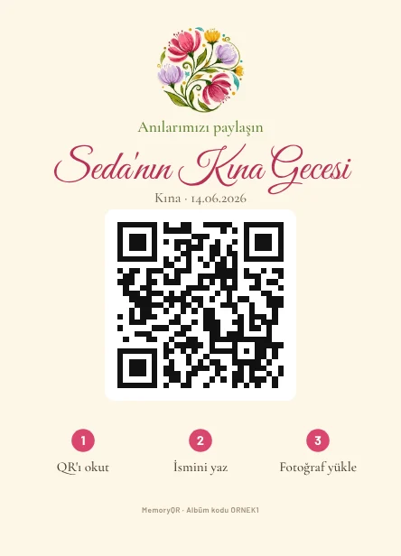
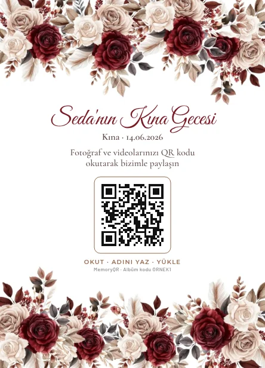
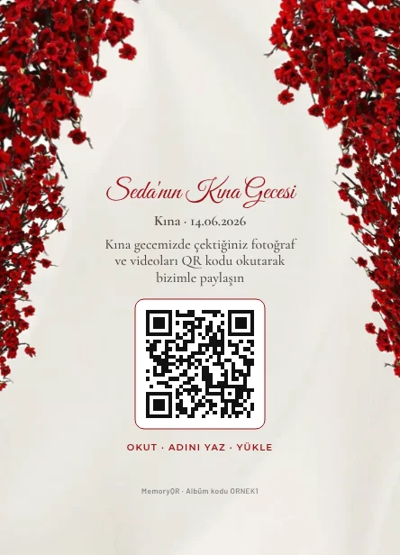
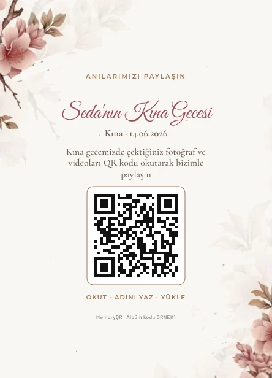

Kına gecesi QR kodu: halayın, türkünün, kınanın her karesi
Kına gecesi bir kere yaşanır ve en güzel videolar misafirlerin telefonuna kaydedilir. MemoryQR ile masalardaki QR kodu okutan her misafir, çektiği fotoğraf ve videoları gecenin ortak albümüne yükler.

Nasıl çalışır?
- QR kartı yerleştirinMasa kartı masalara, kartvizit tabaklara, giriş panosu kapıya. Hepsinde aynı QR.
- Misafirler okutur ve yüklerTelefon kamerasıyla okuturlar, adlarını yazarlar, fotoğraf ve videolarını seçip yüklerler. Uygulama gerekmez.
- Siz hepsini indirirsinizBütün fotoğraf ve videolar tek albümde. Tam ekran izleyin, favorilere ekleyin, tek tıkla indirin.
Kına gecesinde neler kaybolur?
Kına yakılırken söylenen türküler, gelinin ağladığı an, halay başındaki teyzeler… Bunların çoğu video olarak çekilir ve büyük dosyalar WhatsApp'ta ya hiç gönderilmez ya da kalitesi düşer. MemoryQR'da videolar da orijinal kalitesinde yüklenir (video başına 300 MB'a kadar).
Kına ve düğün için ayrı albüm
Kına ve düğünü aynı hafta yapıyorsanız Aile paketi iki etkinliği ayrı albümlerde toplar: 10 masa kartı ya da 100 kartvizit, giriş panosu ve ahşap şövale, 60 gün saklama. Her albümün kendi QR'ı olur, fotoğraflar karışmaz.
Kına gecesine uygun tasarımlar
Kırmızı güller, çiçek bahçesi, bordo tonlar… Kına gecesi kartlarını gelinin ismiyle hazır görebilir, beğendiğinizi seçip siparişi başlatabilirsiniz.
Kına gecesi için QR kart tasarımları




Paketler ve fiyatlar
Dijital
499 TL
- 1 etkinlik, sınırsız fotoğraf ve video
- 30 gün saklama
- QR kart PDF'i (kendiniz basın)
- Tek tıkla hepsini indirme
Standart
899 TL
- 1 etkinlik, sınırsız fotoğraf ve video
- 30 gün saklama
- Tek tıkla hepsini indirme
- 10 masa kartı (A6) ya da 100 kartvizit, basılı olarak (siz seçersiniz)
Standart + Şövale
1.499 TL
- 1 etkinlik, sınırsız fotoğraf ve video
- 30 gün saklama
- Tek tıkla hepsini indirme
- 10 masa kartı (A6) ya da 100 kartvizit, basılı olarak (siz seçersiniz)
- Giriş panosu ve ahşap şövale
Aile paketi
1.999 TL
- Kına + düğün, 2 ayrı albüm
- 10 masa kartı (A6) ya da 100 kartvizit, basılı olarak (siz seçersiniz)
- 1 giriş panosu (50 × 70 cm) ve ahşap şövale
- 60 gün saklama
Ek: 1 yıl saklama +299 TL (albüm Google Drive'da bir yıl arşivlenir). Tek seferlik ödeme, abonelik yok.
Sık sorulan sorular
Kına gecesinde misafirler video yükleyebilir mi?
Evet. Video başına 300 MB'a kadar, yani telefonla çekilmiş birkaç dakikalık kayıtlar yüklenebilir.
Kına ve düğün fotoğrafları karışır mı?
Aile paketinde iki ayrı albüm ve iki ayrı QR olur; her etkinliğin fotoğrafları kendi albümünde durur.
Kına gecesi yaşlı misafirler için zor olur mu?
Hayır. Kamerayı QR'a tutmak ve adını yazmak yeter. Uygulama, üyelik ya da şifre yoktur.
Anılarınız telefonlarda kalmasın
Tasarımınızı seçin, siparişi WhatsApp'tan başlatın.